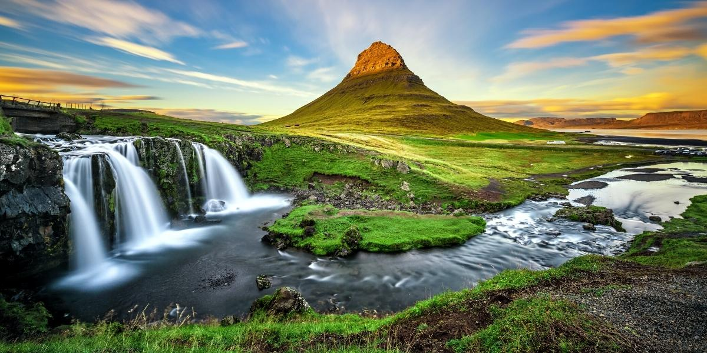

НЕЗВІДАНА ІСЛАНДІЯ: КРАЇНА ЛЬОДУ ТА ВОГНЮ
ПОВНИЙ ГАЙД ПО ОСТРОВУ ДЛЯ ТИХ, ХТО ПОДОРОЖУЄ НА АВТО

Ісландія — це місце, де природа щодня показує всю свою неймовірну міць. Тут ви можете побачити гейзери, які вистрілюють окропом на десятки метрів у небо, величні водоспади та нескінченні чорні вулканічні пляжі. Оренда автомобіля — це найкращий і часто єдиний зручний спосіб дослідити цей віддалений острів у своєму темпі. Не забудьте запакувати надійний вітрівковий одяг, адже погода тут може кардинально змінитися тричі за одну годину!